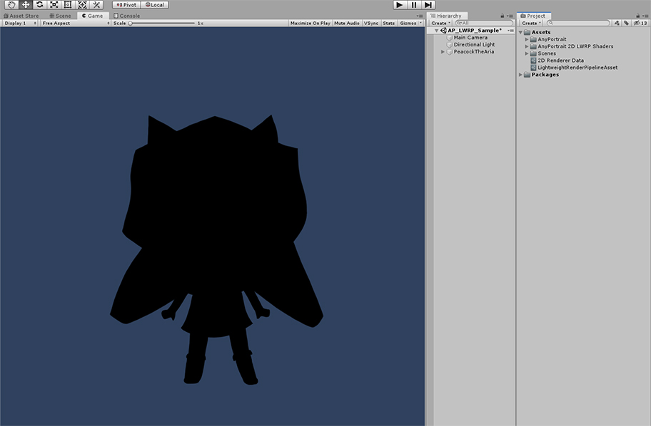

AnyPortrait > マニュアル > Lightweight Render Pipeline
Lightweight Render Pipeline
1.1.8
「Lightweight Render Pipeline（軽量レンダリングパイプライン）」は、Unity 2018で導入され、Unity 2019で正式に採用された新しいレンダリング方法です。
C#スクリプトでレンダリングを制御することができ、高品質と最適化のための機能を提供します。
「Lightweight Render Pipeline」、略して「LWRP」は、まったく新しい方法のレンダリングパイプラインであるため、従来の「Shader」がほとんど互換性がない欠点があります。
そして、残念ながらAnyPortraitで提供される基本的なマテリアルも同様に、「LWRP」と互換性がありません。
この問題を解決するためにAnyPortrait v1.1.7に追加された機能である「マテリアルライブラリ」から「LWRP」のためのマテリアルが提供され、v1.1.8では「LWRP 2D」にも対応します。
このページでは、「LWRP」をサポートしているマテリアルをインストールして設定する過程を説明します。
追加の説明については、以下のページを参照してて見ることをお勧めします。
- マテリアルライブラリ
- 「Shader Graph」でマテリアルを作成
- カスタムシェーダー
- About the Lightweight Render Pipeline Manual (Unity公式ページ/英語)

まず、Unityエディタの「Package Manager」を開き、「Lightweight RP」の項目を選択します。
「Lightweight RP」パッケージがインストールされていない場合、「Package Manager」ウィンドウの右下にインストールボタンが表示されます。
このパッケージをインストールすると、「LWRP」を使用することができます。
（Unityのバージョンに応じて、UIやインストール方法が異なる場合があります。）

メニューの「Assets > Create > Rendering > Lightweight Render Pipeline > Pipeline Asset」を選択して、「LWRPアセット」を作成します。
生成された「LWRPアセット」を、上記の画像のように「Project Settings > Graphics」の「Scriptable Render Pipeline Settings」に割り当てられます。
レンダリング方式が「LWRP」方式に変更されます。
（詳細については、「関連ページ」を参照してください。この方法は、Unityのバージョンごとに異なる場合があります。）

LWRPは、既存のShaderをサポートしていないため、マテリアルが正常に表示されません。
この問題は、AnyPortraitだけでなく、ほとんどのUnityのアセットとマテリアルも同様です。
AnyPortraitエディタを開きます。
(1) 「Root Unit」を選択します。
(2) 「Material Library」ボタンを押します。
(3) 「マテリアルライブラリ」ウィンドウ表示されたことを見ることができます。

(1) マテリアルライブラリの左下で「Advanced Presets」を「LWRP Unlit Preset」に変更します。

(2) 「Unpack Preset」ボタンを押すと、選択されたプリセットのパッケージがインストールされます。
(3) インストールが完了したら、案内メッセージの「Okay」ボタンをクリックしてマテリアルライブラリを再度開く必要があります。

「LWRP Unlit」プリセットが追加されました。

新しいマテリアルのセットを作ってみましょう。
(1) 「Make Material Set」ボタンを押します。
(2) 前の手順で追加した「LWRP Unlitプリセット」を選択します。
(3) 「Select」ボタンを押すと、マテリアルのセットが生成されます。
(4) 生成された「LWRP Unlit」を選択します。
(5) 「Default Material」ボタンを押して、デフォルトのマテリアルに設定します。
次の手順も非常に重要です。
LWRPのような「Scriptable Render Pipeline（SRP）」では、クリッピングメッシュが正常に出力されない問題があります。
Unityのカメラでの「レンダリング処理方式」が既存と異なるからです。
v1.1.8でこの問題を解決するためのオプションが提供されます。
(1) 「Bake」ボタンを押してダイアログを開きます。
(2) 「Setting」タブをクリックします。
(3) 「Render Pipeline」の項目の値を「Scriptable Render Pipeline」に変更します。
注意。
このオプションは、「Unity 2019.1」からサポートされます。
Unity 2018は、SRPを使用することができますが、提供される機能の制約でクリッピングメッシュを正常に出力することができません。

Bakeタブを選択し、Bakeボタンを押します。

Unityシーンを開くと、キャラクターが正常に表示されるのを見ることができます。
Lightweight Render Pipeline 2Dと連動
Unity 2019からLWRPを2Dゲームに適用することができます。
基本的にLWRPと同様の方法であるが、「LWRP 2D」は、既存のLWRPと他のShaderを利用します。
そのため、「LWRP 2D」を利用するためには、別のShaderを作って適用する必要があります。

「LWRP 2D」を設定する方法です。
「LWRP」が設定された状態では、「LWRPアセット」の「Renderer Type」を「Custom」に変更します。
「2D Renderer Dataアセット」を作成した後、「LWRPアセット」の「Data」に設定すると、レンダリング方式が「LWRP 2D」方式に切り替えます。

「LWRP 2D」を設定する方法は、ほぼ同じです。
(1) 「Root Unit」を選択します。
(2) 「Material Library」ボタンを押します。
インストールマテリアルプリセットを選択する必要があります。
(1) 「LWRP 2D Lit Preset（Experimental）」を選択します。

(2) 「Unpack Preset」ボタンを押して、プリセットのパッケージをインストールします。
(3) 案内メッセージの「OK」ボタンをクリックしてマテリアルライブラリを再起動します。
「LWRP 2D Lit」プリセットがインストールされて追加されました。

(1) 「Make Material Set」ボタンを押します。
(2) 「LWRP 2D Litプリセット」を選択します。
(3) 「Select」ボタンを押して、新しいマテリアルのセットを生成します。

(4) 新たに作成された「LWRP 2D Lit」マテリアルセットを選択します。
(5) 「Default Material」ボタンを押して、デフォルトのマテリアルに設定します。

(1) 「Bake」ボタンを押します。
(2) 「Bakeダイアログ」の「Settingタブ」から「Render Pipeline」オプションを「Scriptable Render Pipeline」に設定します。
(3) 「Bakeタブ」に切り替えて、「Bake」ボタンを押します。

Unityシーンで確認してみるキャラクターが黒またはかなり暗い色に見えることです。
インストールされてプリセットがライティングがされているマテリアルなので、光がない場合暗くレンダリングがされます。
シーンに光を追加する必要がするが、「LWRP 2D」で提供される機能を利用してみましょう。

(1) 「Hierarchy」で右クリックをします。
(2) 「Light > 2D」を選択すると、LWRP 2Dのための様々な種類の「Light 2D」を選択することができます。
このページでは、「Freeform Light 2D」を選択してみました。

「Edit Shapeボタン」を押して、光の形を編集します。

キャラクターが「LWRP 2D」で光を受け、レンダリングされることを見ることができます。